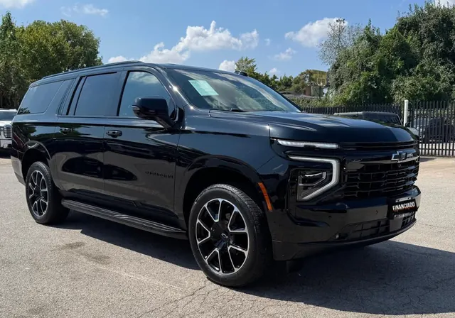

2025 Chevrolet Suburban RST
Black • ID CCH-05

1/2General
| Year | 2025 |
| Make | Chevrolet |
| Model | Suburban RST |
| Type | SUV |
| Color | Black |
| Mileage | 20,000 miles |
| Seats | 7 or 8 seats |
Engine & transmission
| Engine | 5.3L EcoTec3 V8 |
| Power | 355 hp |
| Torque | 383 lb-ft |
| Transmission | 10-speed automatic |
| Drivetrain | To be confirmed |
| Fuel | Gasoline |
Capacities
| Max towing | 8,200 lbs |
| Payload | 1,750 lbs |
| Fuel tank | 28 gallons |
| Fuel economy | 15/20 MPG (city/highway) |
Dimensions
| Length | 226.3 inches |
| Width | 81.0 inches |
| Height | 75.6 inches |
| Wheelbase | 134.1 inches |
Body
| Stock wheels | 22 inches |
Visible in the photos
- 3 rows
- Running boards
- Two-tone wheels
- Dual exhaust
Great for
Big families who travel a lot and want space with a sporty style.
Specs for this model/trim per manufacturer and automotive media. Confirm this unit’s exact specs with the dealer.
Motor estándar (RPO L84) del trim RST según fichas de Chevrolet (355 hp / 383 lb-pie, automática de 10; el 6.2L V8 es opcional). Tracción no confirmada.
Versión 2WD 5.3L según ficha de concesionario y GM Authority (tracción de la unidad no verificada; la 4WD es 15/18 MPG y remolca 8,000 lbs máx.). Rines estándar de 22 pulgadas en RST. / 2WD 5.3L version per dealer listing and GM Authority (unit's drivetrain unverified; 4WD is 15/18 MPG and tows 8,000 lbs max). Standard 22-inch RST wheels.